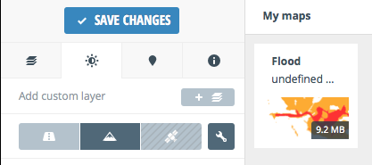

TileMill is a tool for cartographers to quickly and easily design maps for the web using custom data. It is built on the powerful open-source map rendering library Mapnik. TileMill is not intended to be a general-purpose cartography tool, but rather focuses on streamlining and simplifying a narrow set of use cases.
TileMill can also export directly to the SQLite-based MBTiles file format. This format was designed to make traditional web maps available offline and is used by tools like MapBox Hosting, TileStream, and MapBox for iPad.
To create a MapBox account, go to: https://tiles.mapbox.com/signup We will use this account to upload our TileMill created maps later.
1. To create a new project, click Project ‣ New Project. In the Filename, type your project name (i.e. 100yrflood) Uncheck the Default data Click Add to create your 100yrflood project.
2. In the Project list, select your 100yrflood project. This will load your new project with a default background color.
3. Delete the background color by removing the:
Map {
background-color: #b8dee6;
}
4. Click Save.
1. To add layers, click Layers ‣ Add Layer
2. The Add layer dialog allows you to choose a layer to be added.
3. Click the Browse and navigate to select your ~/noah_wb_workshop/source/data/quiapo/100yr_flooding.shp and click Done.
4. Once the 100yrflooding is selected, click Save & Style.
5. To view the layer in the Map Preview, click the Zoom to Extent of the 100yrflooding layer.
We will improve the colors of this layer by adding different polygon-fill for each flood hazard and setting the polygon-opacity to 50%.
1. In the Stylesheet editor replace the default style with the following style
#100yrflooding {
[level = 0.5] {polygon-fill: #FFFF66;}
[level = 1.5] {polygon-fill: #FF9900;}
[level = 1.6] {polygon-fill: #FF0000;}
polygon-opacity: 0.5;
}
2. Click Save
Before exporting your map, we need to define several settings in your project.
1. Project property setting are available by clicking the Settings button.
The Project settings configures several options such as the your project name (Name), description (Description), format, map center (Center), extent (Bounds) and others.
2. Type the following configuration in your Project setting.
Name: 100 year Flood Hazard
Description: 100 year flood hazard in Metro Manila.
Zoom: 12-16
Center: 120.9793,14.5944,13
Bounds: 120.9333,14.4110,121.1275,14.7759
3. Click Save.
1. Upload to MapBox hosting, click Export ‣ Upload.
2. You can set additional changes in your Project settings including your MapBox account. Once finished, click Upload.
3. Depending on the size of your map and your bandwidth, this can take some time to finish. You can see the progress by clicking Export ‣ View Exports
1. To view your uploaded map in Mapbox, go to: https://tiles.mapbox.com/login Login with your account. Your uploaded should be visible in the list.
2. You can click any of your uploaded maps to view it. Within this map view, you can already choose other options to share your map.
We now have a Flood hazard layer designed and hosted in MapBox. To add more context into our map, we will use one of MapBox designed tiles and combine it with our Flood Hazard layer.
1. Go back to your main MapBox page and click New Map and choose the Terrain layer.
2. In the Custom layer tab, click Add custom layer.
3. Choose the flood layer you uploaded, listed in the My maps.
You flood layer is now added in MapBox’s Terrain layer, this provides street level data context to your flood map.
Check the other features in creating the map and then click Save changes. You new map is now available for sharing and use in various webmap applications.
1. In your file manager, open the noah-wb-workshop directory. Go to the webmap directory. Open your map1fin.html in a text editor. We will modify this page to use your MapBox tiles.
<html>
<head>
<meta http-equiv="Content-type" content="text/html; charset=utf-8">
<title>Leaflet Map1</title>
<link rel="stylesheet" href="leaflet.css" />
<script type="text/javascript" src="js/leaflet.js"></script>
<link rel="stylesheet" type="text/css" href="leaflet-openweathermap.css" />
<script type="text/javascript" src="js/leaflet-openweathermap.js"></script>
</head>
<body>
<!-- define a DIV into which the map will appear. Make it take up the whole window -->
<div style="width:100%; height:100%" id="map"></div>
<script type='text/javascript'>
<!-- Set map center to Metro Manila at zoom level 10 using OSM Default tile -->
var map = new L.Map('map', {center: new L.LatLng(14.6146, 121.0081), zoom: 10});
var osm = new L.TileLayer('http://{s}.tile.openstreetmap.org/{z}/{x}/{y}.png');
map.addLayer(osm);
<!-- Add precipitation layer from OpenWeatherMap, and set the opacity to 50% -->
var precipitation = L.OWM.precipitation({showLegend: false, opacity: 0.5});
map.addLayer(precipitation);
</script>
</body>
</html>
2. Let’s add the the MapBox js. Inside the head tag, add the following:
<link rel="stylesheet" type="text/css" href="mapbox.css" />
<script type="text/javascript" src="js/mapbox.js"></script>
3. Delete the OSM tile and replace with your own MapBox map using your own map ID (for example, map ID is maning.map-lynjb1fn:
var map = L.mapbox.map('map','maning.map-lynjb1fn');
map.addLayer(map);
4. Save your html file as a new file and open in your webbrowser.
The full html code should look like this:
<html>
<head>
<meta http-equiv="Content-type" content="text/html; charset=utf-8">
<title>Leaflet Map2</title>
<link rel="stylesheet" href="leaflet.css" />
<script type="text/javascript" src="js/leaflet.js"></script>
<link rel="stylesheet" type="text/css" href="leaflet-openweathermap.css" />
<script type="text/javascript" src="js/leaflet-openweathermap.js"></script>
<link rel="stylesheet" type="text/css" href="mapbox.css" />
<script type="text/javascript" src="js/mapbox.js"></script>
</head>
<body>
<!-- define a DIV into which the map will appear. Make it take up the whole window -->
<div style="width:100%; height:100%" id="map"></div>
<script type='text/javascript'>
<!-- Use your MapBox layer-->
var map = L.mapbox.map('map','maning.map-lynjb1fn');
map.addLayer(map);
</script>
</body>
</html>
And your map like this: